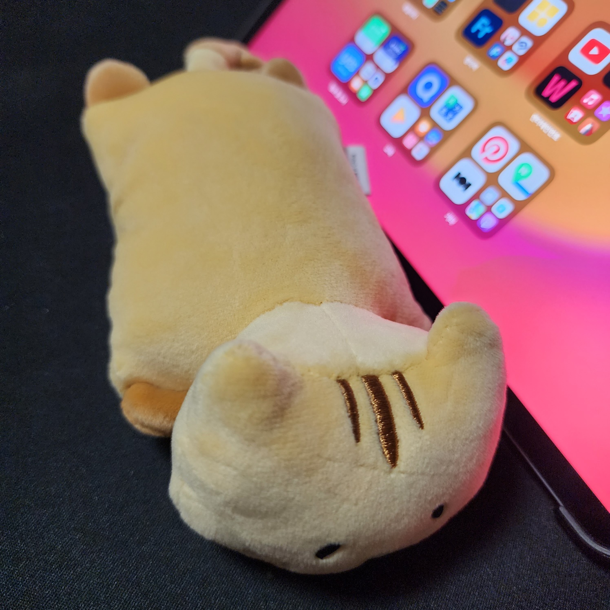

LA HYEONA
418 I'm not a teapot.
VIEW MORE
// 자기소개 페이지 // 자기자신을 소개하기 위한 콘텐츠 // 인터랙티브 요소 활용 (오픈소스 활용 가능) // 간단한 방명록 // 방명록 내용 : fastapi 종료시 삭제 ㅇㅋ // 방명록 입력시 : 작성자와 내용 입력받을 것 & 작성자, 내용, 작성시간 표시되어야함 // 선택: 각 방명록 내용 삭제버튼 존재해 누구나 삭제 가능